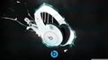
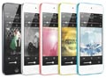

Significant Quote Of Mine: ~"I'm selfish, impatient and a little insecure. I make mistakes, I am out of control and at times hard to handle. But if you can't handle me at my worst, then you sure as hell don't deserve me at my best."
~Marilyn Monroe
A significant piece of literature is a short story written by myself: Window~
Have you ever felt alone? So distant from this world that bodies of broke souls lay around you? I have.
All I can see out this window are barbed wire fences and pavement. It's not the best view but I guess another
three years
of it isn't so bad. One Window Was All It Took. I didn't mean to hurt her. I remember the feeling of those clammy ice cold
hands clenching my arms. Hands that felt as if they should be 6 feet under where screams are mute. One Window Was All It Took. I swear I didn't mean to hurt her. I can still hear the piercing screams rattle my brain at night, the shatter class surrounding her, as her broken corpse lie there, motionless. With a silent face. A hearts love gone, and shattered dreams. Now I have to watch life pass from inside of my cell. This barred window makes me really think about what life would have been like if the devil hadn't arose into my body and shoved her through that window. One Window Was All It Took.
My prediction of the future: Life will still be here, normal, but we might have more technology. Kids might not even have to attend schools and we'll have flying cars or have found a solution for the oil crisis.
Pop Icons~
 
{kind=link}
{kind=link}
{kind=link}
{kind=link}
{kind=link}